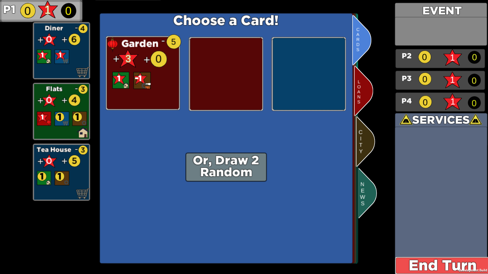

Game Lab Experience
Summer 2015
Starting in May of 2015, I worked as a UROP (undergraduate researcher) with the MIT Game Lab to help set up and participate in the MIT-Shenkar Summer Meaningful Games Development Workshop. Before the workshop my responsibilities included testing activities, setting up facilities, and learning the necessary software.
Once the workshop began, we were split into teams and started paper prototyping ideas. We had 6 weeks to design and implement our game. Our team mentor decided on the theme of home. My team had four people and we made a game which focused on the ideas of leaving home and then returning to your home. The game my team made was called Lygo, which you can play here. My responsibilities on this team included project management tasks, programming in C# for Unity, code documentation, and some art tasks.
Fall 2015-Spring 2016
Paper Prototype
I've been working with the MIT Game Lab on a game since the beginning of the Fall semester. I'm working on a team with three other Undergraduate students and members of the MIT Game Lab staff. We have been paper prototyping, trying to come up with a new idea and play it every week, until December when we worked on polishing the idea that we, and our client, liked the most. Over the January term, we worked on taking that version of the game and making a playable digital prototype. I am the artist on this game, though my responsibilities also include some programming and general game testing and debugging.
This game is meant to start conversations about the Real Estate Development Industry in China. Our game is intended for Chinese players who don't know much English if any, so the goal is to represent as much of the information symbolically as possible, with minimal text in game that will need to be translated, while still preserving its message. The game will be part of a program that is going to be run in China this Summer. To the right are some of the current in-game assets.
We are continuing this project into the Spring semester where my responsibilities will continue to be designing art assets, designing game UI layouts, and implementing what I've designed.